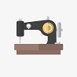
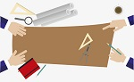

Serviços

Facil entegração
Temos o maior conhecimento com tecidos, couro e sintetico e um conhecimneto em modelagem!

Trabalho Artesanal
Todo o corte aqui é artesanal a pele é total vizualida na mesa de corte.

Melhores praticas
Temos uma das maiores experencias com couro e cuidados com as peles para melhor aproveitamento e beleza.

Trabalho feito com amor
Todos nosso trabalho é feito com maior amor e carinho e cuidado.